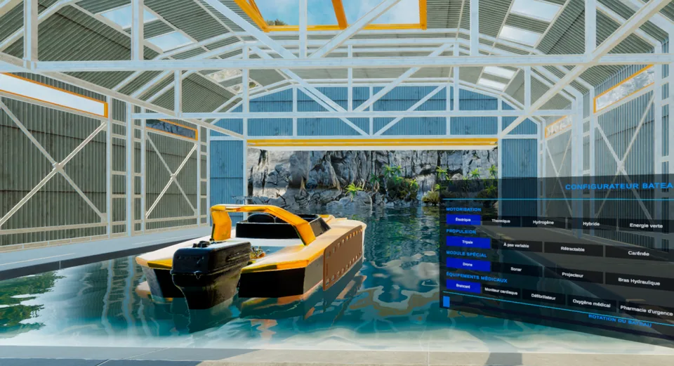
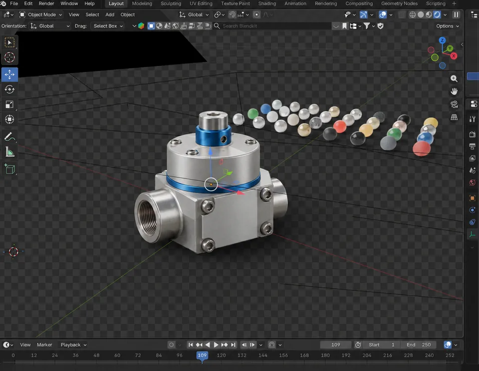
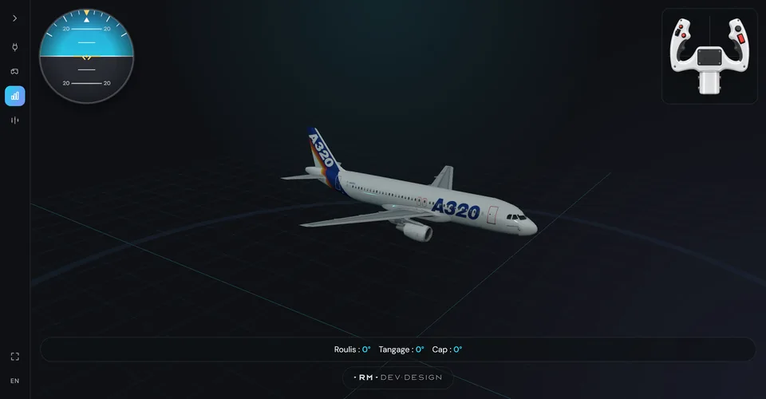

Sécurité VR
Type / secteur : Formation · Formation
Une machine industrielle complexe transformée en scénario de formation VR, avec un environnement réaliste et une utilisation continue sur salon.
Technologies documentées : Unity, VR, CAO, Optimisation 3D, Formation
Mon rôle : Développement de l’application Unity en équipe avec un motion designer ; intégration de l’environnement, des animations et du scénario.
Lire l’étude de cas : Sécurité VR →
Démonstrateur Moteur
Type / secteur : Unity HDRP · Automobile
Un démonstrateur interactif pour expliquer une chaîne de traction hybride, ses flux d'énergie et son comportement dans différentes situations de conduite.
Technologies documentées : Unity, HDRP, Automobile, Visualisation, Prototype
Lire l’étude de cas : Démonstrateur Moteur →
Systèmes Embarqués
Type / secteur : Automobile · Automobile
Une application Unity autour d’un simulateur de conduite pour explorer les interactions dans un cockpit automobile.
Technologie : Unity
Mon rôle : Développement de l’application Unity autour du simulateur de conduite.
Lire l’étude de cas : Systèmes Embarqués →
VR in Cockpit
Type / secteur : Expérience Immersive · Automobile
Une expérience marketing immersive pour présenter le Renault Triber dans trois environnements emblématiques de l'Inde, directement depuis son habitacle.
Technologies documentées : Unity, HDRP, SolidWorks, FBX, PC VR
Lire l’étude de cas : VR in Cockpit →
Formation immersive
Type / secteur : Formation · IA & VR · Formation
Une salle de réunion virtuelle et un coach IA pour analyser le discours, la voix et l'attitude sans mobiliser un formateur à chaque session.
Technologies documentées : Unity, Meta Quest, IA, Analyse vocale, EdTech
Lire l’étude de cas : Formation immersive →
Visualisation 3D immobilière
Type / secteur : Immobilier · Plan 2D → 3D · Immobilier
Une modélisation 3D, une visite temps réel et des visuels haute définition pour valider rapidement les volumes et présenter le projet.
Technologies documentées : DWG, SolidWorks, 3D temps réel, Walkthrough 4K, Immobilier
Lire l’étude de cas : Visualisation 3D immobilière →
XR Share
Type / secteur : Multijoueur AR/VR · R&D
Un prototype de co-créativité à distance réunissant des participants en réalité virtuelle, en réalité augmentée et sur écran classique.
Technologies documentées : Unity, Photon PUN 2, VR, AR, Multiplateforme
Lire l’étude de cas : XR Share →
Visites Virtuelles
Type / secteur : Immobilier · Immobilier
Transformation de plans DWG en appartement visitable à l'échelle, avec une application compatible Meta Quest 3 et un walkthrough vidéo 4K.
Technologies documentées : Unity, URP, SolidWorks, Compatible Meta Quest 3, C#
Lire l’étude de cas : Visites Virtuelles →
App Domotique
Type / secteur : UI / UX Design · UI/UX
Conception complète d'une application mobile pilotant volets, stores et brise-soleil orientables, depuis le cahier des charges jusqu'au kit développeur.
Technologies documentées : Figma, Design system, Wireframes, DevMode, Mobile
Mon rôle : UI/UX et livraison des maquettes et composants aux développeurs ; développement de l’application réalisé par une autre équipe.
Lire l’étude de cas : App Domotique →
Ergonomie Cockpit
Type / secteur : R&D · R&D
Une maquette virtuelle à l'échelle pour tester la position des commandes, les zones de confort et les amplitudes de mouvement.
Technologies documentées : Unity, VR, Leap Motion, Ergonomie, Cockpit
Lire l’étude de cas : Ergonomie Cockpit →
Réalité Augmentée
Type / secteur : Mobile · Automobile
Une application de réalité augmentée conçue pour guider les visiteurs autour d'un véhicule et expliquer ses équipements invisibles.
Technologies documentées : Unity, Vuforia, Réalité augmentée, Tablette, Optimisation 3D
Lire l’étude de cas : Réalité Augmentée →
ShowRoom VR
Type / secteur : Réalité Virtuelle · Commerce
Un showroom virtuel pour parcourir, comparer et configurer plus de 50 références de portes dans un espace qui tient dans un casque.
Technologies documentées : Unity, VR, Configurateur, Showroom, Catalogue 3D
Lire l’étude de cas : ShowRoom VR →
Float and Serious
Type / secteur : Hackathon · Pédagogie
Un hackathon de trois jours à CentraleSupélec, dans le cadre du parcours doctoral DRIVE : des expériences VR pour ancrer les équipes dans des situations réelles, dont le configurateur 3D du projet étudiant Float and Serious.
Technologies documentées : Unity, VR, Configurateur 3D, Data visualisation, Pédagogie
Mon rôle : Conception et développement des expériences VR, animation des temps de visualisation de données.
Lire l’étude de cas : Float and Serious →
Rendus 3D produits
Type / secteur : Blender · Production 3D
Plus de 300 pièces modélisées et rendues sous Blender pour mettre à jour le catalogue visuel d’un site e-commerce, sans mobiliser de studio photo.
Technologie : Blender
Mon rôle : Modélisation, bibliothèque de matériaux et rendu de l’ensemble des pièces du catalogue.
Lire l’étude de cas : Rendus 3D produits →
Flight Control
Type / secteur : Pédagogie · Web 3D
Une interface pour travaux dirigés étudiants : intégrer les données d’un capteur externe pour piloter en temps réel un horizon artificiel, le tangage, l’altitude et le cap d’un avion en 3D.
Technologies documentées : Three.js, Web 3D, Capteurs externes, Pédagogie
Mon rôle : Conception et développement de l’interface 3D et de l’intégration des données capteurs.
Lire l’étude de cas : Flight Control →